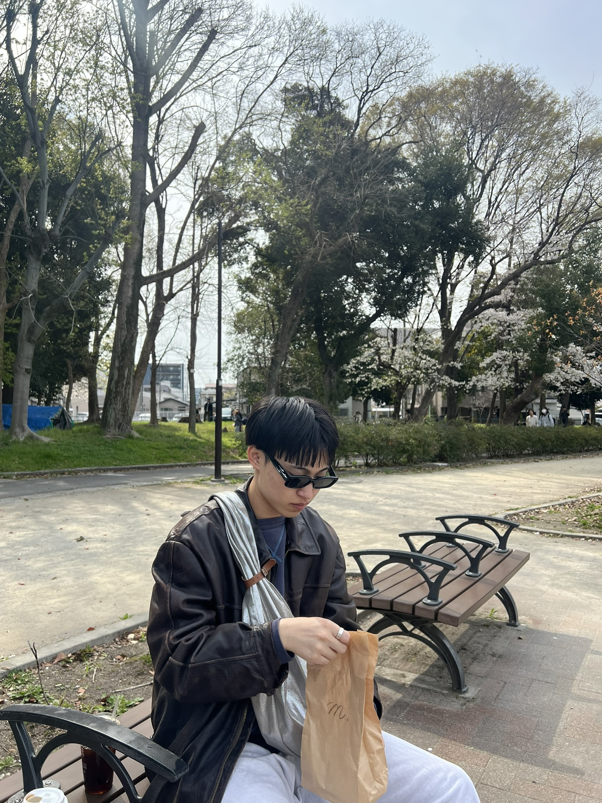

HP・LP の制作
いちばんの軸は、HP・LP の制作です。ヒアリング・構成設計・進行・公開までを一貫して担当し、誰に何を届けるサイトなのかを整理したうえで、問い合わせや予約といったゴールまでの導線から逆算して設計します。これまで約180社の広告運用を担当してきたので、公開したあとに数字がどこで落ちやすいかを見据えて作れます。
- 要件整理・構成設計
- HP / LP 制作
- 進行管理
- 公開後の改善

まずは HP・LP をつくる。AI の使い方も、SNS での発信も、一緒に。
いちばんの軸は、HP・LP の制作です。ヒアリング・構成設計・進行・公開までを一貫して担当し、誰に何を届けるサイトなのかを整理したうえで、問い合わせや予約といったゴールまでの導線から逆算して設計します。これまで約180社の広告運用を担当してきたので、公開したあとに数字がどこで落ちやすいかを見据えて作れます。
AI の操作そのものより、つまずきやすいのは「何をコンセプトにするか」「どんな指示を出せばいいか」といった設計の部分です。ディレクションで身につけた進め方の型を交えながら、AI の使い方を最初の一歩から一緒に学べます。AI をまだ触ったこともない方も大歓迎です。現職では、人の手で月230時間かかっていた業務を、AI で自動化して0時間にした経験があります。その進め方も、お伝えできます。
HP・LP をつくって終わりにせず、SNS での発信や運用も一緒にご相談いただけます。サイトと SNS をつなげて、知ってもらう、見てもらう、問い合わせにつながる、という流れを整えます。
今の状況と、目指すことを。
必要なことと、進める順番を。
目的に合った、伝わるかたちに。
公開後も、数字を見ながら。
HP・LP・アプリの3つに分けて掲載しています。現在公開できるのは4件で、これから随時追加していきます。
旅館の公式サイト。ディレクションから制作、公開後の運用まで担当。
愛知県東浦町の焼肉店の公式サイト。生牛タンと名物「一焼」がおすすめメニューです！
クレーンゲームの景品在庫を、商品名・店舗名から検索できる Web アプリ。バンダイナムコ・タイトーなど店舗のデータを毎日自動更新しています。
地図から「誰かのおすすめ」を見つけられるアプリ。自分だけが知っている地元のお店を、日本中・世界中の人と共有できます。
HP・LP の制作を中心に、AI の使い方の講座や SNS 運用のご相談も受け付けています。
飯田 圭祐
Iida Keisuke
Born 2001.04.27
Web direction / HP・LP production
Aichi, Japan
Web ディレクターとして、ヒアリング・企画・構成設計・ライティングの指示・進行管理・公開までを担当してきました。
ディレクションで一番大事にしているのは、「かっこいいサイト」ではなく「目的が果たせるサイト」にすることです。誰に向けて、何をしてもらうためのサイトなのか。そこが決まらないまま作り始めると、きれいでも問い合わせが増えないサイトになってしまいます。
だからまず、事業の状況とゴールをお聞きするところから始めます。そのうえで必要なページと導線を決め、デザイン・実装の意図までブレないように進行します。事業側の意図と、つくり手の都合。その間に立って翻訳するのがディレクターの仕事だと思っています。
あわせて、これまで約180社の広告運用を担当してきました。業種も規模もさまざまな案件を見てきたので、「この業種ならどこで離脱しやすいか」「どの訴求が刺さりやすいか」の引き出しがあります。
つくる側と、集客して数字を追う側。その両方を経験しているので、納品して終わりではなく「公開したあとどう回すか」から逆算した設計ができます。制作だけ、運用だけ、で分断されないのが自分の強みです。
加えて現職では、AI を実際の業務に組み込み、人の手で月230時間かかっていた業務をすべて自動化して、0時間にしました。リサーチや原稿づくり、数値チェックといった工程も短縮できるので、制作も運用もスピードを落とさず進められます。
ただ、AI を使うほど強く感じているのは、道具が良くなっても「何をどう作るか」を決める部分は残る、ということです。AI の操作はできても、サイトを作るとなると何をコンセプトにすればいいのか、どんな指示を出せばいいのかで手が止まってしまう。これはツールの問題ではなく、設計の問題です。
どのページが必要で、何をどの順に見せて、どこへ着地させるのか。ディレクションで身につけたその型があるからこそ、AI を使う前提のままでも、作るものの中身を一緒に決めていけます。
なので、AI をまだ触ったことがない方こそ歓迎です。専門用語が分からなくても、何ができるのかイメージがついていなくても構いません。「やりたいことはあるけど、どう進めればいいか分からない」という状態からご相談ください。ツールの選び方も、指示の出し方も、最初の一歩から一緒に進めます。講座のかたちで、一緒に学ぶこともできます。
HP・LP の制作を軸に、AI の使い方の講座や、SNS の運用も一緒にご相談いただけます。サイトをつくる、使い方を学ぶ、発信して広げる。ひとつずつでも、まとめてでも大丈夫です。
HP・LP の制作や作り直しを中心に、AI の使い方の講座、SNS の運用のご相談も歓迎します。まずは状況をお聞かせください。
お問い合わせありがとうございます。2営業日以内にご返信します。